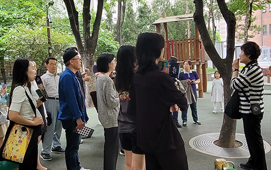
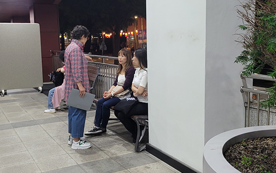

야로(夜路)
JEONG-DONG CULTURE NIGHT
문화해설사와 함께하는
역사해설투어

다같이 돌자 정동 한바퀴
[홈페이지 사전신청, 현장접수(해설사 본부: 배재어린이공원)]
코스
배재학당역사박물관 - 서울시립미술관 - 정동제일교회 - 이화박물관 - 구러시아공사관 - 중명전
운영시간
금(fir) 18:00~20:30, 토(sat) 14:00~20:30 [매시, 매 30분마다 운영]
소요시간 및 인원
60분, 10~15명/회
※ 영어해설 18:00, 19:00, 일어해설 19:00, 중국어해설 19:00

정동역사 지점해설
해설장소 : 배재어린이공원
운영시간
금(fri) 19:00~21:00, 토(sat) 15:00~21:00 [매시, 매 30분마다 운영]
소요시간 및 인원
15분, 10~15명/회